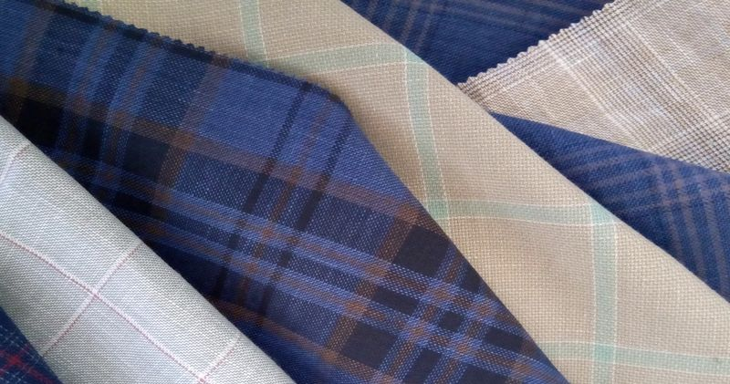
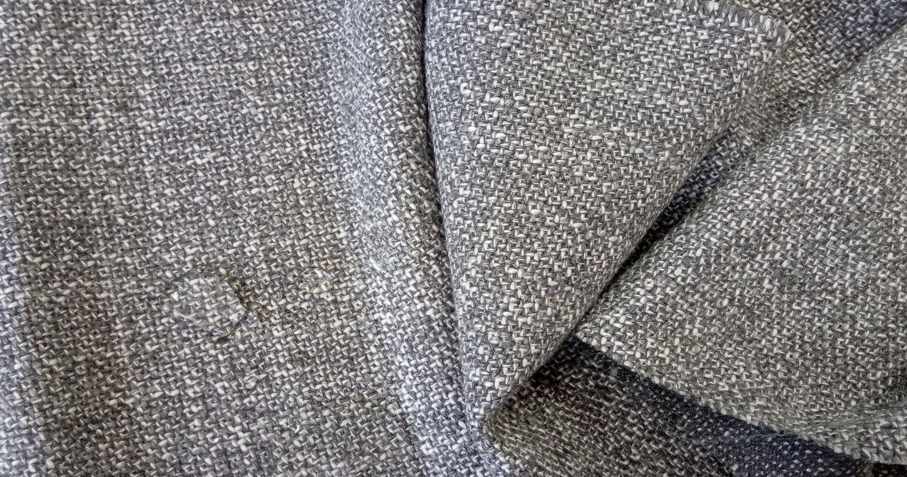
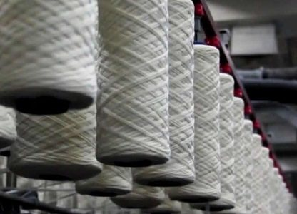
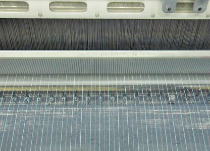
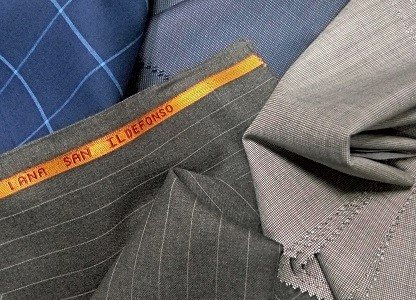
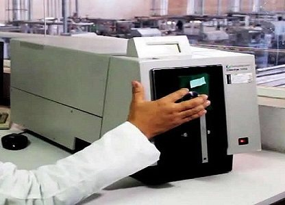
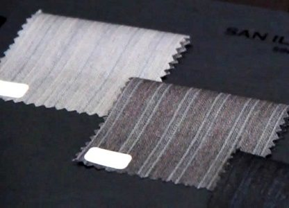
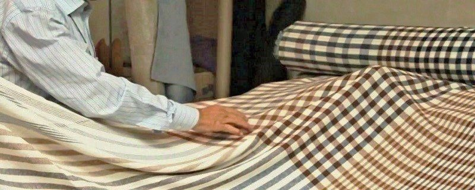
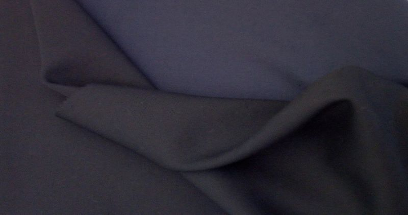

Production · Tulancingo, Hidalgo
Nos procédés
San Ildefonso et Novalan sont des entreprises à intégration verticale, ce qui nous permet de garder un contrôle complet du processus de production.
5 étapes
Tout le processus de productionLes cinq étapes
Tout le processus de production
Nous disposons d'une vaste expérience et nous nous efforçons continuellement d'améliorer, d'innover et d'atteindre de hauts niveaux de qualité tout au long du processus de production, depuis la sélection soignée des matières premières jusqu'au produit fini.
- 01
- 02
- 03
- 04
- 05
Étape
Filature
Sous un strict contrôle de qualité et de productivité, nos usines ont la capacité de couvrir non seulement 100 % de nos besoins en matière de filature, mais nous permettent en outre d'être présents sur le marché national et international du fil.
Nos principales matières premières sont : la laine et d'autres fibres d'origine animale comme le cachemire, le mohair, le poil de chameau et la soie ; des fibres naturelles comme le lin et le coton ; ainsi que des fibres synthétiques comme le polyester, le nylon, les aramides et la viscose.

Étape
Tissage
Nous produisons, avec technologie, dévouement et soin, des tissus classiques et d'avant-garde dans les différentes fibres naturelles et artificielles.
Nous offrons une grande variété de poids, de constructions et de finissages. Nous réalisons également des développements spécifiques en tissage et en finissage, selon les exigences du client.

Étape
Teinture et finissage
Les colorants chimiques et les auxiliaires que nous utilisons sont élaborés par des sociétés reconnues dans le monde entier, qui nous appuient et nous conseillent dans l'usage de produits optimisant nos procédés de teinture et de finissage.
Tous nos produits chimiques respectent les standards internationaux de qualité et de réglementation écologique.
Nous pouvons teindre en fibre, en ruban peigné, en fil et en tissu, le tout sous un strict système de contrôle et de supervision.
L'usage de technologies de pointe nous permet de teindre et d'ennoblir tout type de matière textile d'origine naturelle, synthétique et artificielle, avec régularité et constance dans le ton.

Étape
Laboratoire
Tous les procédés sont parfaitement contrôlés et suivis du début à la fin par nos laboratoires de contrôle de la qualité.
Nous assurons la qualité de nos produits au moyen de différents essais : stabilité du ton, solidité à la lumière et au lavage, densité, retrait, entre autres.

Étape
Design
Notre service associe la vaste spécialisation et l'expérience de notre personnel à l'usage des technologies les plus modernes.
Nos collections sont régulièrement exposées dans divers salons internationaux, ce qui nous maintient à l'avant-garde des tendances de la mode.

Contrôle
« Nous pouvons teindre en fibre, en ruban peigné, en fil et en tissu. »

Sections
Autres sections du site

Contact
Novalan, S.A. de C.V.
Adresse
Carr. Tulancingo-Huapalcalco #1510Col. Caltengo
Tulancingo, Hidalgo. México
C.P.: 43626
- Téléphone
-
(52) 775-755-11-23
(52) 775-753-03-89 - info@novalanfabrics.com.mx